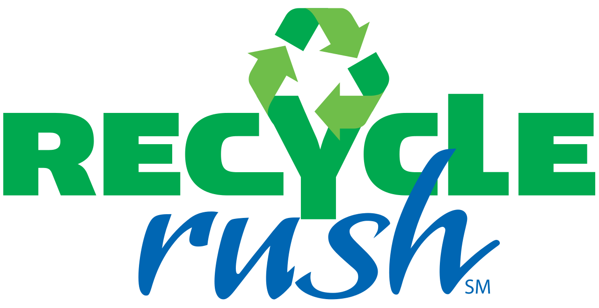

---
layout: default
title: Recycle Rush 2015
---
<div class="container">
	<div class="row">
		<div class="col-sm-7" style="background-color: #ffffff; margin-bottom: 20px;">
			<h1 style="font-size: 24pt; margin-top:0px">Recycle Rush - 2015 FRC Game</h1>
			<div class="embed-responsive embed-responsive-16by9">
			<iframe class="embed-responsive-item" width="640" height="360" src="https://www.youtube.com/embed/W6UYFKNGHJ8" frameborder="0" allowfullscreen></iframe>
			</div>
		</div>
		<div class="col-sm-5" style="background-color:#f0f0f0; margin-bottom:20px;">
			<p style="padding-top:10px">Recycle Rush is a recycling-themed game played by two Alliances of three robots each. Robots score points by stacking totes on scoring platforms, capping those stacks with recycling containers, and properly disposing of pool noodles, representing litter. In keeping with the recycling theme of the game, all game pieces used are reusable or recyclable by teams in their home locations or by FIRST at the end of the season.</p>
			
		</div>
	</div>
</div>

</body>

</html>
